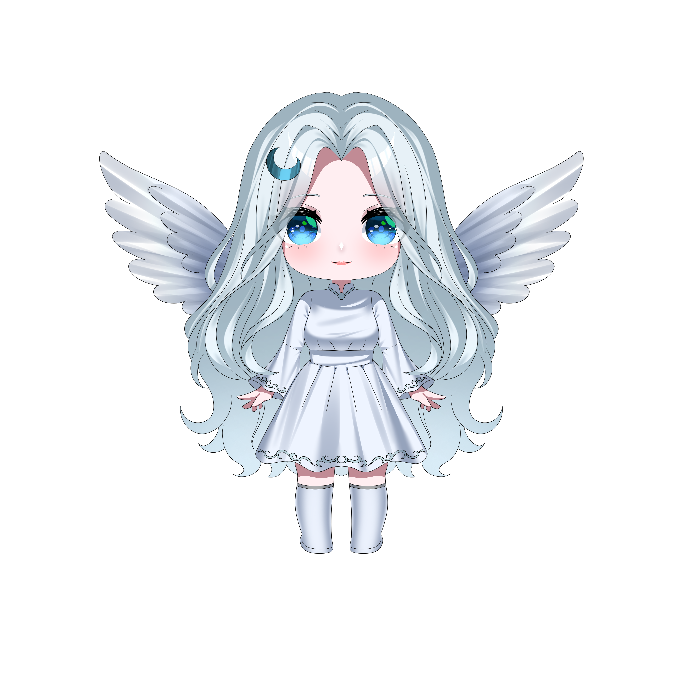

Flowlune Games
An independent UK studio developing original rhythm games built on custom technology.

Welcome. Take your time.
Now available
Rhythm Angel (Demo)
A 6-Key keyboard rhythm game built on a custom C++/SDL2 engine, focused on flow, clarity, and musical expression.
Available now on itch.io and GameJolt. Feedback helps shape difficulty tuning, performance, and UI polish.